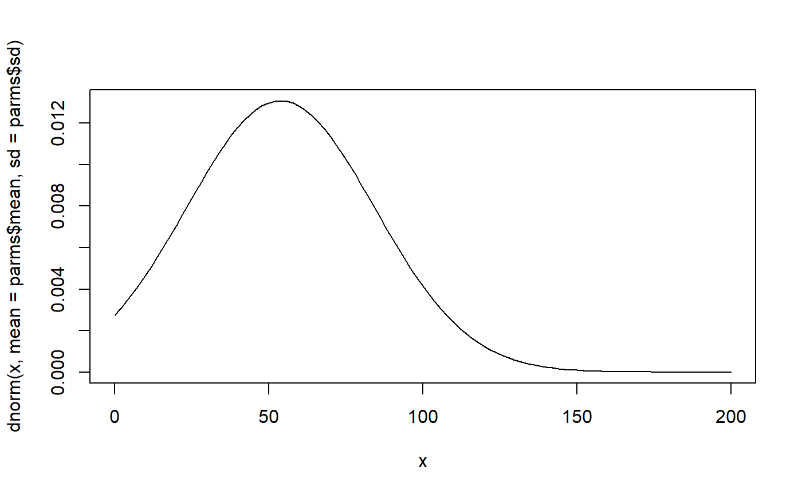
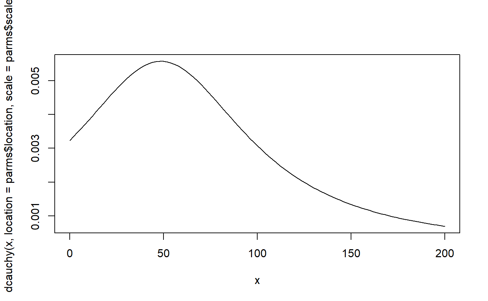
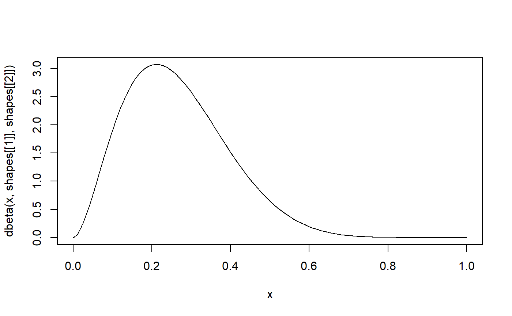
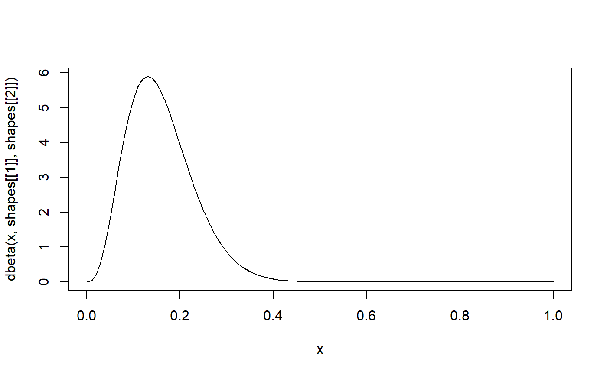

find_beta(), find_normal() and find_cauchy() find the
shape, mean and standard deviation resp. the location and scale parameters
to describe the beta, normal or cauchy distribution, based on two
percentiles. find_beta2() finds the shape parameters for a Beta
distribution, based on a probability value and its standard error
or confidence intervals.
find_beta(x1, p1, x2, p2) find_beta2(x, se, ci, n) find_cauchy(x1, p1, x2, p2) find_normal(x1, p1, x2, p2)
| x1 | Value for the first percentile. |
|---|---|
| p1 | Probability of the first percentile. |
| x2 | Value for the second percentile. |
| p2 | Probability of the second percentile. |
| x | Numeric, a probability value between 0 and 1. Typically indicates
a prevalence rate of an outcome of interest; Or an integer value
with the number of observed events. In this case, specify |
| se | The standard error of |
| ci | The upper limit of the confidence interval of |
| n | Numeric, number of total observations. Needs to be specified, if
|
A list of length two, with the two distribution parameters than can be used to define the distribution, which (best) describes the shape for the given input parameters.
These functions can be used to find parameter for various distributions,
to define prior probabilities for Bayesian analyses. x1,
p1, x2 and p2 are parameters that describe two
quantiles. Given this knowledge, the distribution parameters are
returned.
Use find_beta2(), if the known parameters are, e.g. a prevalence
rate or similar probability, and its standard deviation or confidence
interval. In this case. x should be a probability,
for example a prevalence rate of a certain event. se then
needs to be the standard error for this probability. Alternatively,
ci can be specified, which should indicate the upper limit
of the confidence interval od the probability (prevalence rate) x.
If the number of events out of a total number of trials is known
(e.g. 12 heads out of 30 coin tosses), x can also be the number
of observed events, while n indicates the total amount of trials
(in the above example, the function call would be: find_beta2(x = 12, n = 30)).
Cook JD. Determining distribution parameters from quantiles. 2010: Department of Biostatistics, Texas (PDF)
# example from blogpost: # https://www.johndcook.com/blog/2010/01/31/parameters-from-percentiles/ # 10% of patients respond within 30 days of treatment # and 80% respond within 90 days of treatment find_normal(x1 = 30, p1 = .1, x2 = 90, p2 = .8)#> $mean #> [1] 53.78387 #> #> $sd #> [1] 30.48026 #>find_cauchy(x1 = 30, p1 = .1, x2 = 90, p2 = .8)#> $location #> [1] 48.54102 #> #> $scale #> [1] 57.06339 #>parms <- find_normal(x1 = 30, p1 = .1, x2 = 90, p2 = .8) curve( dnorm(x, mean = parms$mean, sd = parms$sd), from = 0, to = 200 )parms <- find_cauchy(x1 = 30, p1 = .1, x2 = 90, p2 = .8) curve( dcauchy(x, location = parms$location, scale = parms$scale), from = 0, to = 200 )find_beta2(x = .25, ci = .5)#> $shape1 #> [1] 2.860267 #> #> $shape2 #> [1] 7.93757 #># find Beta distribution for 3 events out of 20 observations find_beta2(x = 3, n = 20)#> $shape1 #> [1] 4.157811 #> #> $shape2 #> [1] 22.03272 #>